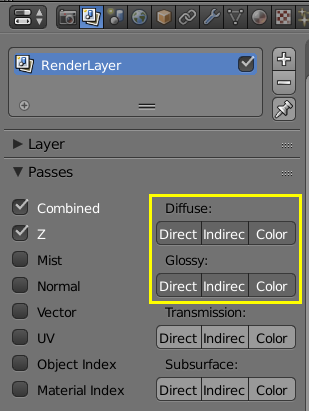
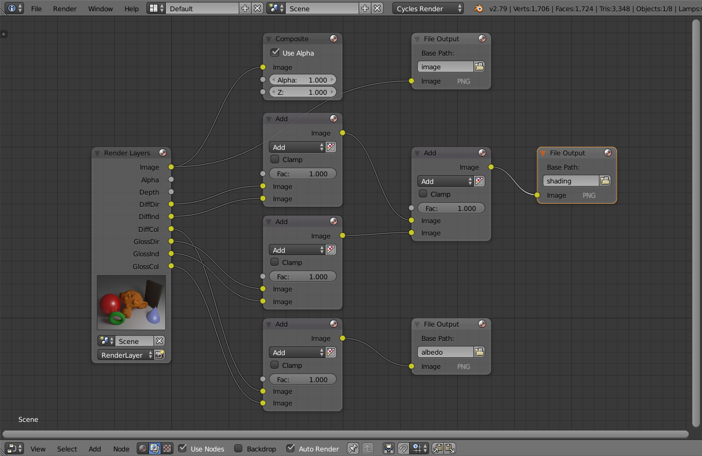
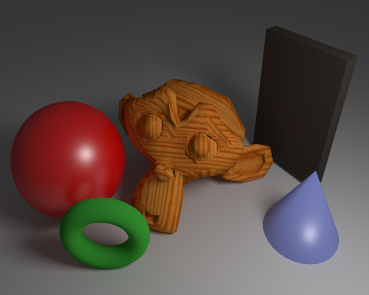
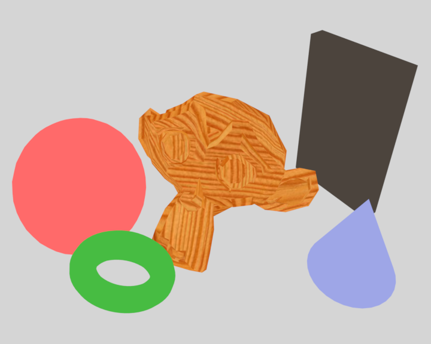
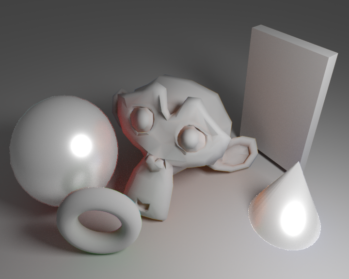

本征图像的合成
文章目录
从现实世界直接获取照片及其本征图像基本上是不可能的事情，即使是现有最好的本征图像分解方法，分解出来的结果也很难让人满意。但是有个时候又经常需要用到比较准确的本征图像，最好的办法还是用3D软件来进行渲染。
对于渲染的算法过程来说，其复杂度远远高于本征分解的方法。尤其是对于渲染软件，最简单的都是以BRDF为基础，通过渲染方程进行光线跟踪来渲染的。而本征分解至今仍然是假设物体都是lambertian，并且以Retinex理论为基础的，也就是I=R*L，把图像看作是物体反射率和光照的结合。这就有点不好办了，因为渲染的图像可能有各向异性、反射、折射、发光等各种情况，这些没办法单单用物体反射率和光照来组合。所以在建模的时候需要注意一下，都应该用lambertian材质，高光也可以考虑在内，折射和反射就不能加了。
建模
这里用blender来进行建模，用cycles渲染，虽然blender的操作方式是我见过最反人类的，不过看在是免费的也无可厚非了。模型的构建无非就是放几个模型，加上材质和纹理，设置好光照和相机就行了，只是要注意加材质的时候最好只加Diffuse BRDF和Glossy BRDF。
渲染
渲染是关键步骤，首先需要在Render Layers中的Passes下面开启Diffuse和Glossy的几个选项

这里面的Direct指的是直接光源照射，Indirect指的是其他物体反射过来的光线，Color指的是物体反射率。关于Indirect要不要加到Shading里面呢，我个人认为应该是要加的，按照Retinex理论，除了物体自身反射率，其他不管是哪里来的光线，都应该算是Shading，不过这样的话，可能虽然加的灯源只有白色，但是因为物体相互之间互相反射光线，所以Shading里面会包含其它颜色。另外一个问题就是如果场景里面加入了高光，那合成Shading的时候，也应该把高光算进去。
然后切换到Node Editor，Node tree type选择Compositing，并开启Use Nodes，如图下所示
我们把Diffuse和Gloss的Direct、InDirect光照都加起来，这样就能够得到Shading图像。把Diffuse和Gloss的Color加起来，就能得到Albedo图像。值得注意的是，这里的加是指的图像每个通道每个像素相加，所以应该用Mix结点，然后改成Add。结点树如下图所示：

然后进行渲染，即可获得Image、Albedo和Shading图像：
| Image | Albedo | Shading |
|---|---|---|
|  |  |  |
注意到shading图上面的球和锥体边缘有些瑕疵，这是因为光线跟踪采样的时候是进行的随机采样，这样Diffuse和Gloss的边缘就会因为随机采样而不一致，这个问题理论上是无法解决的。如果一定要避免边缘瑕疵，可以只用Diffuse材质。
文章作者 Lianera
上次更新 2018年07月12日